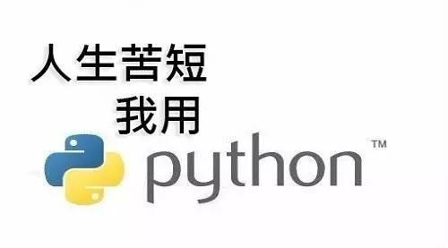

介绍
Python 是一个高层次的结合了解释性、编译性、互动性和面向对象的脚本语言。
Python 的设计具有很强的可读性，相比其他语言经常使用英文关键字，其他语言的一些标点符号，它具有比其他语言更有特色语法结构。
Python 是一种解释型语言： 这意味着开发过程中没有了编译这个环节。类似于PHP和Perl语言。
Python 是交互式语言： 这意味着，您可以在一个 Python 提示符 >>> 后直接执行代码。
Python 是面向对象语言: 这意味着Python支持面向对象的风格或代码封装在对象的编程技术。
Python 是初学者的语言：Python 对初级程序员而言，是一种伟大的语言，它支持广泛的应用程序开发，从简单的文字处理到 WWW 浏览器再到游戏。
